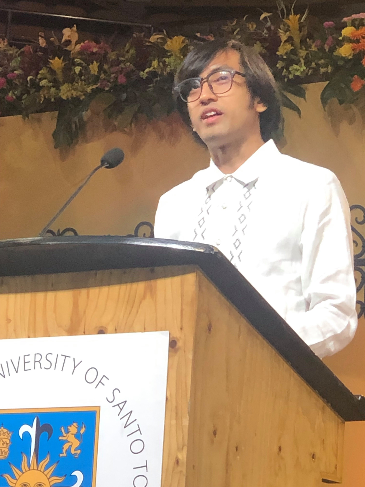

Kristian Guevara

Greetings!
I am honored to serve you as the president of the UST-IICS Alumni Association.
I am grateful for all the support that fellow alumnis, faculty members, and IICS staff has given towards the association.
Since our establishment from 2016, the association has done efforts in keeping our community alive and driving a strong culture towards belongingess.
UST-IICS, as being one of the youngest institutions, has seen its alumnis thrive at their own careers. With each passing year,
more and more people become contributors to the industry and as Thomasians, we have proven to be the best of what we can be.
As graduates of UST-IICS, you are our finest ambassadors.
We hope you carry along the Thomasian pride as you go along your journey and show the world how we can be game changers.
As we look back years ago, our institution has been though a lot to get where we are now.
Being the youngest alumni association, we’re still on our way to achieving more so each of us play a crucial role in order to succeed.
Wether big or small, your participation matters to making our goals happen.
We look forward to bigger connections and more engagements for the years to come.
Best,